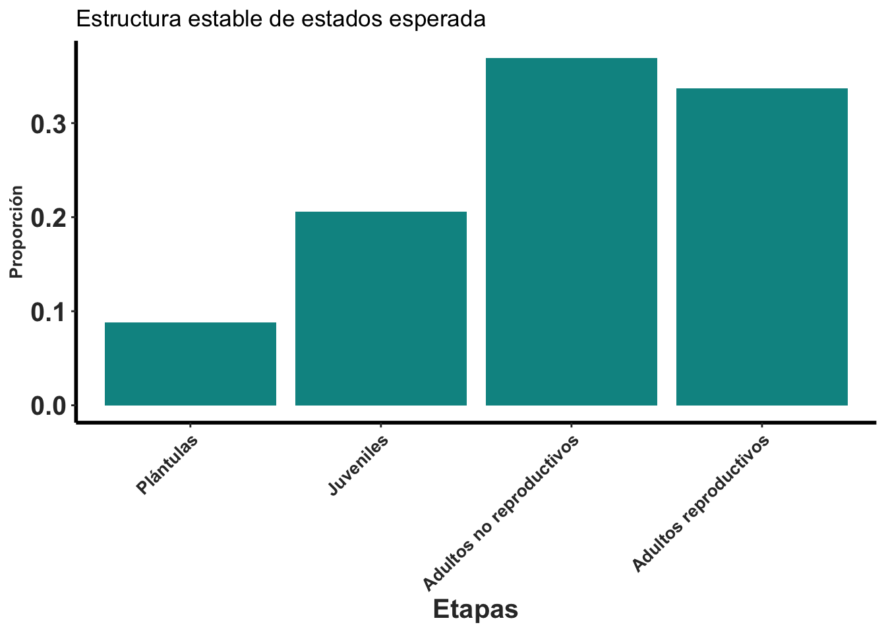
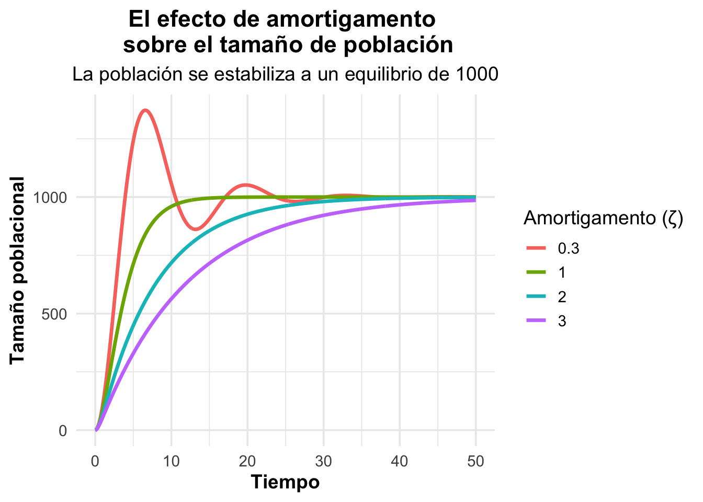
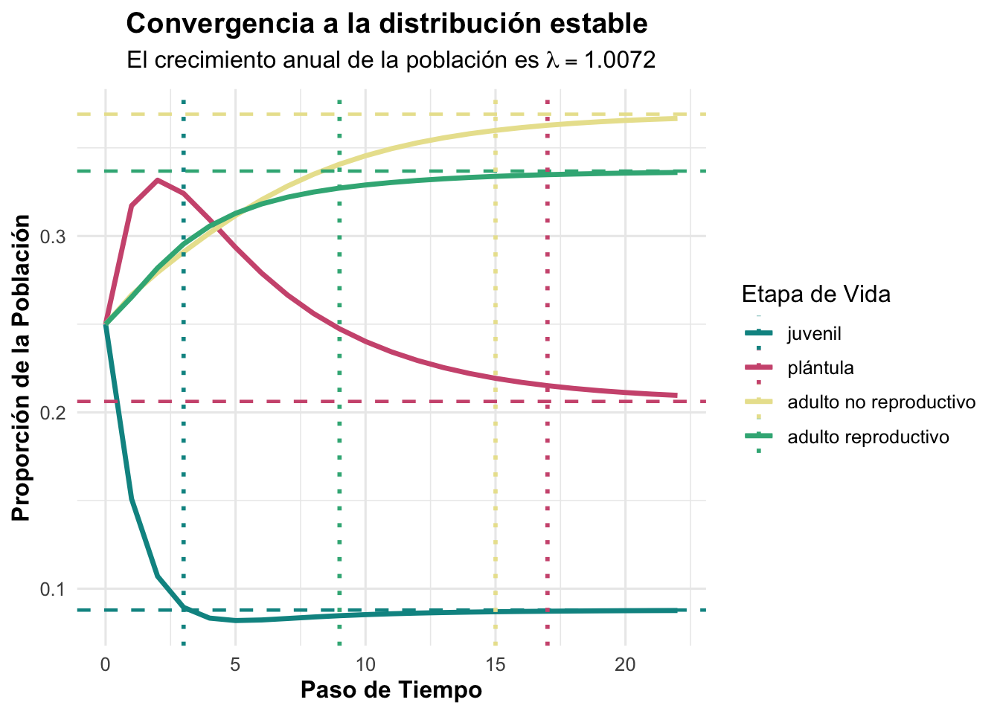

Code
library(popdemo)
library(popbio)
library(ggplot2)
library(dplyr)
library(scales)
library(Rage)library(popdemo)
library(popbio)
library(ggplot2)
library(dplyr)
library(scales)
library(Rage)En este capítulo revisaremos algunos de los índices frecuentemente utilizados cuando hablamos de análisis matricial. Estos índices describen la calidad de la matriz por lo que su cálculo es importante para obtener resultados e interpretaciones válidas. Este capítulo se compone de dos secciones, en la primera se incluyen índices para checar el estado de la matriz, estos son: Dimensión cuadrada, Ergocidad, no Negativa, Irreducibilidad y Primitividad. En la segunda sección se abordan los índices que describen el comportamiento de la población a largo plazo, basados en los modelos de proyección poblacional (MPP). Estos índices permiten evaluar cómo cambia la población antes y después de un disturbio. Entre ellos se encuentran: el Análisis de Convergencia, Análisis de Amortiguamiento, Valor reproductivo y la Estructura Estable. Si se requiere conocer los índices con mayor detalle se sugiere consultar (Caswell, 2001) y (Stott, Townley & Hodgson, 2011).
El primer paso en el análisis matricial es construir una matriz de transición poblacional, la cual resume en una tabla la supervivencia,la reproducción y transiciones de los individuos en diferentes etapas o categorías de edad. Cada fila y columna de la matriz representa un estadio del ciclo de vida de la especie, y cada elemento dentro de la matriz describe la transición de un estadio a otro en un intervalo de tiempo determinado (por ejemplo, de un año a otro).
Una matriz de proyección poblacional (MPP) es una matriz cuadrada que permite describir y predecir la dinámica de una población a través del tiempo. En esta se organizan las probabilidades de transición entre categorías de tamaño o estado (plántulas, juveniles, adultos, etc.) junto con la fecundidad o reproducción de los individuos.
La MPP se utiliza para proyectar la estructura de una población en el futuro, a partir de su composición actual. Así, constituye la base para calcular tasas de crecimiento poblacional, estructuras estables, valores reproductivos y otros índices demográficos fundamentales.
A continuación se construye la matriz poblacional de Lepanthes rubripetala. Esta matriz se compone de cuatro estados: plántulas (PL), juveniles (J), adultos no reproductivos (NR) y adultos reproductivos (AR).
# Capturar los datos de la matriz para L. rubripetala (Tremblay et al. 2015)
Lr1 <- matrix(c(0.4324, 0, 0, 0.15,
0.3784, 0.8459, 0, 0,
0, 0.0034, 0.7954,0.2300,
0, 0.0890, 0.1841,0.7510), byrow=TRUE,ncol=4)
# Capturar las categorias de estado
estadios <- c("PL", "J", "NR", "AR")
colnames(Lr1) <- rownames(Lr1) <- estadios
# Obtener la matriz L. rubripetala
Lr1 <- matrix(Lr1[1:4, ], nrow = 4, dimnames = list(estadios, estadios))
Lr1 PL J NR AR
PL 0.4324 0.0000 0.0000 0.150
J 0.3784 0.8459 0.0000 0.000
NR 0.0000 0.0034 0.7954 0.230
AR 0.0000 0.0890 0.1841 0.751Las matrices poblacionales deben tener dimensiones cuadradas, es decir, deben tener el mismo número de renglones que de columnas. Esta característica es importante porque cada columna y renglón representa una categoría de edad o un estado del ciclo de vida de la especie. Las columnas representa categoría de los individuos al inicio del estudio, mientras que los renglones su tránsito a otra después de un periodo de tiempo. Si la matriz no es cuadrada, no hay correspondencia que permita comparar el número de individuos por categoría al inicio y final de un periodo de estudio, por lo que será imposible estimar la tasa de crecimiento poblacional. En el caso de L. rubripetala, la matriz poblacional tiene 4 renglones y 4 columnas, por lo que cumple con la propiedad de dimensión cuadrada. Esto puede verificarse fácilmente en R usando la función dim.
dim(Lr1)[1] 4 4Decimos que la propiedad de ergodicidad se cumple cuando el crecimiento asintótico predicho por matriz es independiente de la estructura poblacional inicial considerada en el estudio. En otras palabras, sin importar el estado inicial de la población, su comportamiento converge a una estructura estable y a una tasa de crecimiento constante a largo plazo. Si una matriz poblacional no es ergódica, el crecimiento poblacional depende de la estructura poblacional inicial, lo que implica que el promedio o la tasa de crecimiento poblacional no son buenos predictores del comportamiento poblacional a largo plazo (Mangalam & Kelty-Stephen, 2022). Para evaluar si la matriz es ergódica puede emplearse la función isErgodic del paquete popbio en R. Esta función da como resultado el valor lógico “TRUE” si la matriz es ergódica y “FALSE” en el caso contrario. En L. rubripetala se espera que la matriz sea ergódica, ya que los autores reportaron que la población alcanza tanto una estructura estable como una tasa de crecimiento constante en el tiempo (Tremblay, Raventos & Ackerman, 2015).
isErgodic(Lr1, digits=5, return.eigvec=FALSE)[1] TRUEEjemplo de una matriz que no cumple con la condición de ergodicidad. Esta condición se presenta cuando ningún individuo logra pasar del estado de plántula al juvenil y tampoco al de adulto. Al evaluar esta matriz con la función isErgodic se comprueba que no es ergódica al ser la respuesta “FALSE”. Esto significa que el crecimiento poblacional depende de la estructura poblacional inicial y, por lo tanto, no se puede esperar que la población alcance una estructura estable ni una tasa de crecimiento constante a largo plazo.
#Capturar los datos de la matriz para L. rubripetala (Tremblay et al. 2015)
Lr1_No_erg <- matrix(c(0.4324, 0., 0., 0.150,
0., 0.8459, 0., 0.,
0., 0.0034, 0.7954,0.2300,
0., 0.0890, 0.1841,0.7510), byrow=TRUE,ncol=4)
plot_life_cycle(Lr1_No_erg, stages = estadios, fontsize = 8)isErgodic(Lr1_No_erg, digits = 4, return.eigvec = FALSE)[1] FALSELa matriz poblacional debe ser no negativa, es decir, todas sus entradas deben ser mayores o iguales a cero. Esto significa que cada entrada de la matriz representa el número o la proporción de individuos que transitan de un estado a otro, por lo que carece de sentido biológico que alguno de estos valores sea negativo. Además, si la matriz tuviera elementos negativos no sería posible comparar adecuadamente el número de individuos en cada categoría de edad o estado, y, tampoco se podría calcular la tasa de crecimiento poblacional. En el caso de L. rubripetala, la matriz es no negativa, ya que todos sus elementos son mayores o iguales a cero. Esto puede verificarse en R con la función IsPositive, la cual responde “TRUE” si la matriz cumple con esta condición y “FALSE” en el caso contrario.
# No negativa
IsPositive <- function(mat) {
if (all(mat >= 0)) {
return(TRUE)
} else {
return(FALSE)
}
}
IsPositive(Lr1)[1] TRUEA continuación se muestra un ejemplo de una matriz que no cumple con la propiedad de no negatividad. En este caso, el elemento en la posición (4, 3) es negativo, lo que significa que la transición de la categoría adulto reproductivos a la de adulto no reproductivo tiene un valor negativo. Al evaluar esta matriz con la función IsPositive se obtiene el valor de “FALSE”, lo que indica que no se trata de una matriz no negativa. Por lo tanto, esta la matriz no es válida para el análisis de dinámica poblacional y no se puede esperar que la población alcance una estructura estable ni una tasa de crecimiento constante a largo plazo.
#Capturar los datos de la matriz para L. rubripetala (Tremblay et al. 2015)
Lr1_No_pos<- matrix(c(0.4324, 0, 0, 0.15,
0.3784, 0.8459, 0, 0,
0, 0.0034, 0.7954,-0.2300,
0, 0.0890, 0.1841,0.7510), byrow=TRUE,ncol=4)
IsPositive(Lr1_No_pos)[1] FALSELa matriz de transición poblacional debe ser irreducible, es decir, todos los elementos de la matriz están conectados entre sí y existe una ruta desde cualquier estado hacia los demás. Esto es fundamental, ya que si la matriz no es irreducible, no se puede esperar que la población alcance una estructura estable ni una tasa de crecimiento constante a largo plazo. En el caso de L. rubripetala, la matriz es irreducible: todas sus categorías están conectadas y existe una ruta entre ellas. Esta propiedad puede comprobarse en R mediante la función isIrreducible del paquete popdemo, la cual resulta en “TRUE” si la matriz es irreducible y “FALSE” en caso contrario. Es importante hacer notar que no todas las matrices reducibles son inválidas para el análisis poblacional. En algunos casos, pueden ser aceptables; por ejemplo, en especies con estados de vida que no son relevantes para el crecimiento poblacional, como las fases postreproductivas en mamíferos (humanos, ballenas, etc.).
Cabe señalar que, la función isIrreducible corresponde a “TRUE” si la matriz es irreducible y “FALSE” si no lo es. En el caso de L. rubripetala la matriz es irreducible. Esto significa que todos los elementos de la matriz están conectados y hay una ruta desde cualquier categoría de edad o estado a todas las demás, lo que permite que la población alcance una estructura estable y una tasa de crecimiento constante a largo plazo.
isIrreducible(Lr1)[1] TRUEA continuación se muestra un ejemplo de matriz en la que el cuarto estadio no presenta valores de reproducción. En este caso la función isIrreducible indica “FALSE” como resultado. Esto se debe a que no existe un vínculo entre la categoría de plántula y la categoría de adulto reproductivo, implicando que no hay reproducción asocida a la presencia de plántulas en la población. La ausencia de este vínculo resulta, por un lado, en un ciclo de vida incompleto, como se evidencia en la imagen, y, por otro, en una población que no podrá alcanzar una estructura estable ni una tasa de crecimiento constante a largo plazo.
Lr1_Irr <- matrix(c(0.4324, 0., 0.0, 0,
0.3784, 0.8459, 0, 0,
0., 0.0034, 0.7954, 0.2300,
0, 0.0890, 0.1841, 0.7510), byrow=TRUE,ncol=4)
plot_life_cycle(Lr1_Irr, stages = estadios, fontsize = 8)isIrreducible(Lr1_Irr)[1] FALSELa matriz de transición poblacional debe ser primitiva, es decir, al elevarla a altas potencias, se obtiene un único valor positivo (i.e. tasa de crecimiento poblacional). Esta propiedad es importante porque garantiza que la población alcance una estructura estable y una tasa de crecimiento constante a largo plazo. En el caso de L. rubripetala, la matriz es primitiva, ya que al elevarla a altas potencias se obtiene un único valor positivo. Esto puede comprobarse en R con la función isPrimitive del paquete popdemo, cuya respuesta es “TRUE” si la matriz cumple con esta propiedad. Una matriz no primitiva, en contraste, tendría una dinámica poblacional inestable a largo plazo cuando, por ejemplo, la población presente un comportamiento cíclico, caracterizado por oscilaciones entre categorías de edad o estado que nunca se estabiliza. Es importante señalar que, por definición, toda matriz irreducible es primitiva; sin embargo, no toda matriz primitiva es irreducible. Por ejemplo, una matriz podría ser primitiva sin ser irreducible, si presenta un ciclo de vida completo en el que alguna edad/estado no es relevante para el crecimiento poblacional.
isPrimitive(Lr1)[1] TRUEEn esta sección se revisan los índices poblacionales obtenidos a partir del analisis de matricial, los cuales se estiman una vez que ha verificado que cumplen con los supuestos. Estos índices permiten comprender el comportamiento de la población a largo plazo y anticipar cómo se espera que se comporte en el tiempo. Los índices que se abordan a continuación son: estructura estable, valor reproductivo, análisis de convergencia y análisis de amortiguamiento. Todos estos se calculan a partir de la matriz de transición poblacional y del vector de la estructura poblacional observada al inicio del estudio.
La estructura poblacional estable (W, también llamada eigenvector derecho) describe la proporción de individuos en cada categoría de edad o estado que se espera alcanzar a largo plazo. En el caso de L. rubripetala, se espera que la población alcance una estructura estable de 0.088, 0.206, 0.369 y 0.337 para las categorías de plántulas, juveniles, adultos no reproductivos y adultos reproductivos, respectivamente.
Este índice supone que la tasa de crecimiento poblacional, \(\lambda\), se mantiene constante en el tiempo, lo cual sólo es posible bajo condiciones ambientales constantes. Sin embargo, en la naturaleza esto es poco frecuente. Además, la estructura estable supone que el periodo de muestreo y las condiciones abióticas y bióticas son típicas y constantes. En la revisión bibliográfica de Williams y colaboradores (Williams et al., 2011) se reporta que más del 80% de las poblaciones analizadas no cumplieron con la condición de estructura estable, situación que que fue más evidente en poblaciones descritas con matrices grandes (n x n) y tiempo de generacional prolongado. De manera similar, Tremblay (com.pers.), en una revisión bibliográfica rápida, reconoció que la mayoría de las orquídeas analizadas no se encontraban en la estructura estable al inicio de su muestreo poblacional.
#Estructura estable de estados
stable.stage(Lr1) PL J NR AR
0.08789851 0.20619682 0.36907404 0.33683063 Uno puede visualizar la estructura poblacional usando el código siguiente.
Wmax <- stable.stage(Lr1)
Wdf = data.frame(Wmax)
Wdf$Categorias = c(
"Plántulas",
"Juveniles",
"Adultos no reproductivos",
"Adultos reproductivos"
)
Wdf$Categorias = factor(
Wdf$Categorias,
levels = c(
"Plántulas",
"Juveniles",
"Adultos no reproductivos",
"Adultos reproductivos"
)
)
library(ggplot2)
ggplot(Wdf, aes(y = Wmax, x = Categorias)) +
geom_bar(stat = "identity", fill = "blue") +
labs(
title = "Estructura estable de estados esperada",
x = "Etapas",
y = "Proporción"
) +
theme_minimal()

El valor reproductivo (v, también denominado el eigenvector izquierdo) describe la contribución esperada de cada categoría de edad o estado a la reproducción de la población. En el caso de L. rubripetala se espera que los valores reproductivos sean 1.00, 1.52, 2.32 y 2.66 para las categorías de plántulas, juveniles, adultos no reproductivos y adultos reproductivos, respectivamente. Este índice es relevante porque permite identificar cómo se distribuye la reproducción en la población y qué etapas son más importantes para el crecimiento poblacional a largo plazo. La primera categoría siempre tiene un valor reproductivo de 1.00, ya que representa el inicio del ciclo de vida y sirve como referencia para calcular el valor reproductivo de los demás estados.
El valor reproductivo permite definir estrategias de manejo en las especies. Por ejemplo, en Spathoglottis plicata, una orquídea terrestre considerada invasora, las acciones de control deberían enfocarse en las categorías con mayor valor reproductivo, debido a que son las que más contribuyen al crecimiento poblacional. Por el contrario, conviene enfocarse en los estadios con valores reproductivos bajos si se busca remover individuos de una población con el menor impacto posible a la población.
# Valor reproductivo
reproductive.value(Lr1) PL J NR AR
1.000000 1.519043 2.316113 2.664676 El análisis de convergencia mide el tiempo esperado para que una población alcance su estructura estable y un crecimiento asintótico después de un disturbio. Es decir, indica qué tan rápido la población regresa a su estructura estable tras una perturbación (Stott, Townley & Hodgson, 2011). Este comportamiento se cuantifica mediante el índice de amortiguamiento (damping ratio), que evalúa la influencia del valor propio subdominante, \(\lambda_2\), durante el periodo de convergencia.
El índice se expresa a través del cociente entre el valor propio dominante, \(\lambda_1\), y el valor absoluto del subdominante \[\mathbf{\rho=\frac{\lambda_1}{\left|\lambda_2\right|}}\]; dónde \(\rho\) representa el índice de amortiguamiento, \(\lambda_1\) corresponde al valor propio dominante de la matriz de transición poblacional y \(\lambda_2\) al módulo del segundo valor propio más grande. Este índice no tiene unidades y es independiente de la estructura inicial de la población.
En el caso de L. rubripetala, al calcular los valores propios de la matriz con la función eigen, se obtiene un valor dominante de \(\lambda_1= 1.00721\) y un valor subdominante de \(\lambda_2= 0.8319\). De esta manera el índice de amortiguamiento es:
\[ \rho = \frac{\lambda_1}{|\lambda_2|} = \frac{1.00721}{|0.83192|} \approx 1.21 \]
El valor obtenido indica que la población converge hacia su estructura estable tras un disturbio; aunque, lentamente.
Es importante señalar que la interpretación de este índice depende de la escala temporal con que se construyó la matriz. Si bien la mayoría de los estudios poblacionales utilizan datos anuales (Crone et al., 2011), también existen estudios con periodos de muestreo mensuales, bimensuales, estacionales o bianuales, los cuales se establecen de acuerdo con el ciclo de vida de la especie estudiada.
eigen(Lr1)$values # la lista de valores propios de la matriz Lr1[1] 1.0072061+0.00000000i 0.8319189+0.00000000i 0.4927875+0.06468183i
[4] 0.4927875-0.06468183iDR = eigen(Lr1)$values[1] / abs(eigen(Lr1)$values[2])
DR[1] 1.210702+0idr(Lr1) # usando la función "dr" para "damping ratio" en el paquete "popdemo"[1] 1.210702El comportamiento del Índice de amortiguamiento se visualiza a través de una gráfica de líneas, la cual muestra la respuesta de un sistema a un paso de entrada (un cambio súbito) y cuya respuesta en el tiempo varía ante distintos niveles de amortiguamiento. Para facilitar la comprensión visual del concepto, en el siguiente recuadro se presenta el códico que resulta en una gráfica en la que se muestra el comportamiento de una población perturbada.
library(ggplot2)
# --- Definir los parametros ---
# Población inicial en el tiempo t=0. Ese el punto de equilibrio inicial.
poblacion_inicial <- 1000
# Factores de amortiguamiento para graficar.
# 0,3 = Subamortiguado (oscila)
# 1,0 = Críticamente amortiguado (retorno más rápido sin oscilación)
# 2,0 = Sobreamortiguado (retorno lento sin oscilación)
amortigamento <- c(0.3, 1.0, 2.0, 3.0)
# Frecuencia de la oscilación (omega_n).
frecuencia <- 0.5
# Tiempo total para la simulación
tiempo_total <- 50
# Paso de tiempo para la simulación (más pequeño para una curva más suave)
etapa_tiempo <- 0.1
# --- Generate the Damped Oscillation Data for Multiple Ratios ---
# Create an empty data frame to store all the data
todo_data_df <- data.frame()
# Recorra cada relación de amortiguamiento para generar los datos
for (zeta in amortigamento) {
# Create a sequence of time points
time_points <- seq(0, tiempo_total, by = etapa_tiempo)
# Calculate the population at each time point based on the damping ratio.
# The mathematical form of the step response changes depending on the damping ratio.
if (zeta < 1) {
# Underdamped case: damped sine wave
omega_d <- frecuencia * sqrt(1 - zeta^2)
population_data <- poblacion_inicial *
(1 -
exp(-zeta * frecuencia * time_points) *
(cos(omega_d * time_points) +
(zeta / sqrt(1 - zeta^2)) * sin(omega_d * time_points)))
} else if (zeta == 1) {
# Critically Damped case
population_data <- poblacion_inicial *
(1 - exp(-frecuencia * time_points) * (1 + frecuencia * time_points))
} else {
# Overdamped case
s1 <- -zeta * frecuencia + frecuencia * sqrt(zeta^2 - 1)
s2 <- -zeta * frecuencia - frecuencia * sqrt(zeta^2 - 1)
population_data <- poblacion_inicial *
(1 -
(s2 * exp(s1 * time_points) - s1 * exp(s2 * time_points)) / (s2 - s1))
}
# Add the data for the current damping ratio to a temporary data frame
temp_df <- data.frame(
Time = time_points,
Population = population_data,
DampingRatio = factor(zeta) # Store damping ratio as a factor for coloring
)
# Bind the temporary data frame to the main data frame
todo_data_df <- rbind(todo_data_df, temp_df)
}
# --- Create the Plot using ggplot2 ---
ggplot(todo_data_df, aes(x = Time, y = Population, color = DampingRatio)) +
# Add the lines for each damping ratio
geom_line(linewidth = 1.2) +
# Set the title and labels
labs(
title = "El efecto de amortigamento \n sobre el tamaño de población",
subtitle = "La población se estabiliza a un equilibrio de 1000",
x = "Tiempo",
y = "Tamaño poblacional",
color = "Amortigamento (ζ)" # Title for the legend
) +
# Customize the plot theme for better aesthetics
theme_minimal(base_size = 14) +
theme(
plot.title = element_text(hjust = 0.5, face = "bold"),
plot.subtitle = element_text(hjust = 0.5),
axis.title = element_text(face = "bold")
)
La figura resultante ilustra el efecto de diferentes coeficientes de amortiguamiento en la respuesta de una población a un cambio súbito. El gráfico muestra cuatro comportamientos distintos para la población perturbada y su retorno a un estado de equilibrio, correspondiente a un tamaño poblacional de 1000 individuos.
La respuesta de la población ante cuatro índices de amortiguamiento es la siguiente:
• Subamortiguado (ζ=0.3): Esta es la respuesta oscilante. El sistema sobrepasa el punto de equilibrio y luego oscila, con el tiempo la amplitud de las oscilaciones disminuyen gradualmente hasta estabilizarse en el equilibrio.
• Amortiguado críticamente (ζ=1.0): Esta es la respuesta más rápida, la cual alcanza el equilibrio sin oscilaciones ni sobreamortiguaciones. Se considera la respuesta ideal para sistemas que requieren un retorno rápido y estable al valor objetivo.
• Sobreamortiguado (ζ=2.0): Esta respuesta es lenta y se aproxima al punto de equilibrio sin oscilaciones. En comparación con el caso críticamente amortiguado, tarda mucho más en estabilizarse, ya que la fuerza de amortiguamiento es muy grande.
• Sobreamortiguado (ζ=3.0): Similar al caso anterior, pero con un amortiguamiento aún mayor. La respuesta es muy lenta y se acerca al equilibrio de manera gradual sin oscilaciones.
El tiempo de convergencia es el periodo estimado que tarda la población en alcanzar su estructura estable. Este índice es relevante porque facilita entender el comportamiento poblacional a largo plazo. En R este cálculo puede realizarse con dos funciones del paquete popdemo: dr y convt. La función dr calcula el amortiguamiento y a partir de éste puede estimarse el tiempo de la convergencia de la siguiente manera:
\[ t = \frac{\log(dr)}{\log(x)} \]
dónde \(dr\) es el índice de amortiguamiento (damping ratio), \(x\) es un factor de comparación, y \(t\) representa el tiempo en la misma unidad en que se construyó la matriz (días, meses, años, etc.).
El análisis de amortiguamiento estima la rapidez con la que una población converge a su estructura estable después de un disturbio (Jiang et al., 2020). El índice de amortiguamiento (\(d > 0\)) sugiere que mientras mayor sea su valor, más rápida será la convergencia. El tiempo de amortiguamiento se calcula como: \(\tau=1/d\), dónde \(\tau\) expresa la duración del proceso de convergencia en unidades de tiempo consistentes con la matriz poblacional. Cabe señalar que, se ha demostrado que existe una relación entre el índice de amortiguamiento y el tiempo generacional de una especie (Jiang et al., 2020).
dr(Lr1, return.time = TRUE, x = 10) # cuanto tiempo toma aumentar la población de veces $dr
[1] 1.210702
$t
[1] 12.04278A partir de la la función \(contv\) del paquete popdemo se puede estimar el tiempo esperado en que una población alcanza su estructura estable, considerando la estructura poblacional observada al inicio del estudio. Esta función simula el modelo y determina manualmente cuándo la población converge, dado un nivel de exactitud especifico (accuracy). Entre más estricta sea la exactitud, mayor será el tiempo de convergencia. Para utilizar esta función es necesario indicar la estructura inicial, es decir, el número de individuos en cada estadio. En el caso de L. rubripetala se espera que el tiempo de convergencia sea de 18 ciclos (meses) para alcanzar su estructura estable.
Por ejemplo, si se comienza con una población inicial de 8, 20, 27 y 34 individuos en las categorías de plántulas, juveniles, adultos no reproductivos y adultos reproductivos, respectivamente, la población alcanzaría en 6 meses, aproximadamente, la estructura estable. En contraste, si la población inicial estuviera sesgada (compuesta únicamente por plántulas, por ejemplo), el tiempo de convergencia sería mucho mayor. Este enfoque resulta muy útil al definir estrategias de conservación; por ejemplo, al establecer una nueva población con una distribución inicial determinada.
n0 <- c(8, 20, 27, 34) # la estructura de la población inicial
convt(Lr1, accuracy = 1e-4, vector = n0, iterations = 10000) # la estructura poblacional inicial[1] 18Dado que el tiempo de convergencia es un índice que representa el periodo esperado para que una población alcance su estructura estable, se puede calcular variando la cantidad de individuos en las diferentes edades o estados al llevar a cabo una simulación.
Por ejemplo, se estima que L. rubripetala alcanzaría la estructura estable en 25 meses, si la población inicia con una población sesgada a plántulas (n = 1000) y, por lo tanto, sin la presencia de individuos de los estados posteriores.
La población comienza en cada etapa con 100 individuos y se simula durante 22 pasos de tiempo. El gráfico resultante muestra cómo la población converge a su estructura estable a lo largo del tiempo, con cada etapa representada por una línea de color diferente. La línea horizontal indica el valor de la proporción de la etapa estable y la linea vertical representa a que tiempo se espera que la etapa llegua a su nivel de estructura estable.
Nota que si las condiciones se quedan igual en el tiempo se espera que la población converja a una estructura estable, es decir, que la proporción de individuos en cada etapa se mantenga constante a lo largo del tiempo. En este caso, la proporción de individuos en cada etapa converge a 0.088, 0.206, 0.369 y 0.337 para las categorías de plántulas, juveniles, adultos no reproductivos y adultos reproductivos, respectivamente 3, 17, 15 y 9 periodos (el tiempo de re-muestreo correspondiente a la construcción de la matrix).
# Este script utiliza un enfoque de matriz para modelar las dinámicas de una
# población de 4 etapas (por ejemplo, clases de edad o estadios de vida).
# Demuestra cómo una distribución de población converge a un estado estable.
# Instalar y cargar el paquete ggplot2 para el trazado
# install.packages("ggplot2")
library(ggplot2)
# --- Definir Parámetros de Simulación ---
# Población inicial en el tiempo t=0 para cada etapa.
# Una distribución inicial uniforme es un buen punto de partida para observar la convergencia.
initial_population <- c(100, 100, 100, 100)
# Número total de pasos de tiempo para la simulación
total_time_steps <- 22
# --- Definir la Matriz de Transición de la Población (Leslie Matrix) ---
# Se utiliza la matriz proporcionada por el usuario.
transition_matrix <- matrix(c(0.4324, 0, 0, 0.15,
0.3784, 0.8459, 0, 0,
0, 0.0034, 0.7954, 0.2300,
0, 0.0890, 0.1841, 0.7510),
nrow = 4,
byrow = TRUE
)
# --- Simular la Dinámica de la Población y Calcular Proporciones ---
# Nombres de las etapas en el orden especificado
stage_names <- c(
"juvenil",
"plántula",
"adulto no reproductivo",
"adulto reproductivo"
)
# Crear un data frame para almacenar los resultados de la simulación
all_data_df <- data.frame(
Time = integer(),
Proportion = numeric(),
Stage = character()
)
# Vector de población actual (distribución inicial)
n_current <- initial_population
# Bucle para simular cada paso de tiempo
for (t in 0:total_time_steps) {
# Calcular la proporción de la población en cada etapa
current_proportions <- n_current / sum(n_current)
# Crear un data frame temporal para este paso de tiempo
temp_df <- data.frame(
Time = rep(t, 4),
Proportion = current_proportions,
Stage = factor(stage_names, levels = stage_names) # Se usa factor para ordenar las etapas
)
# Añadir los datos al data frame principal
all_data_df <- rbind(all_data_df, temp_df)
# Proyectar la población al siguiente paso de tiempo
# Multiplicación de la matriz de transición por el vector de población
n_next <- transition_matrix %*% n_current
n_current <- n_next
}
# --- Calcular la Distribución de Etapa Estable (SSD) ---
# Se calcula el vector propio derecho (eigenvector) del valor propio dominante.
# Este vector representa la proporción de individuos en cada etapa en el estado estable.
eigen_results <- eigen(transition_matrix)
# Encontrar el valor propio dominante (más grande)
dominant_eigenvalue <- max(Re(eigen_results$values))
# Encontrar el vector propio derecho correspondiente (eigenvector)
stable_stage_distribution_raw <- Re(eigen_results$vectors[, which.max(Re(
eigen_results$values
))])
# Normalizar el vector propio para que sume 1
stable_stage_distribution <- stable_stage_distribution_raw /
sum(stable_stage_distribution_raw)
stable_stage_distribution_df <- data.frame(
Stage = factor(stage_names, levels = stage_names),
Proportion = stable_stage_distribution
)
# --- Calcular el Tiempo de Convergencia para cada Etapa ---
# Definir una tolerancia para la convergencia (por ejemplo, 1% de la proporción de SSD)
tolerance <- 0.01
# Crear un data frame para almacenar los tiempos de convergencia
convergence_times_df <- data.frame(
Stage = character(),
Time = numeric()
)
# Bucle a través de cada etapa para encontrar el primer paso de tiempo donde
# la proporción está dentro de la tolerancia de la SSD
for (i in 1:length(stage_names)) {
stage_name <- stage_names[i]
ssd_proportion <- stable_stage_distribution_df[
stable_stage_distribution_df$Stage == stage_name,
"Proportion"
]
# Filtrar los datos para la etapa actual
stage_data <- all_data_df[all_data_df$Stage == stage_name, ]
# Encontrar la primera fila donde la proporción está dentro de la banda de tolerancia
convergence_time <- stage_data$Time[which(
abs(stage_data$Proportion - ssd_proportion) <= tolerance
)[1]]
if (!is.na(convergence_time)) {
convergence_times_df <- rbind(
convergence_times_df,
data.frame(
Stage = stage_name,
Time = convergence_time
)
)
}
}
# La función `factor` es necesaria para garantizar que los nombres de las etapas
# en `convergence_times_df` se muestren en el orden correcto.
convergence_times_df$Stage <- factor(convergence_times_df$Stage, levels = stage_names)
# --- Crear el Trazado Usando ggplot2 ---
population_plot <- ggplot(
all_data_df,
aes(x = Time, y = Proportion, color = Stage)
) +
geom_line(linewidth = 1.2) +
# Añadir líneas horizontales para la distribución de etapa estable
geom_hline(
data = stable_stage_distribution_df,
aes(yintercept = Proportion, color = Stage),
linetype = "dashed",
linewidth = 0.8
) +
# Añadir líneas verticales para el tiempo de convergencia
geom_vline(
data = convergence_times_df,
aes(xintercept = Time, color = Stage),
linetype = "dotted",
linewidth = 1.0
) +
labs(
title = "Convergencia a la distribución estable ",
subtitle = paste(
"El crecimiento anual de la población es λ =",
round(dominant_eigenvalue, 4)
),
x = "Paso de Tiempo",
y = "Proporción de la Población",
color = "Etapa de Vida"
) +
theme_minimal(base_size = 12) +
theme(
plot.title = element_text(hjust = 0.5, face = "bold"),
plot.subtitle = element_text(hjust = 0.5),
axis.title = element_text(face = "bold")
) +
xlim(0, max(all_data_df$Time))
# Imprimir el trazado final
print(population_plot)
Revisión:
RLT 2025_06_02